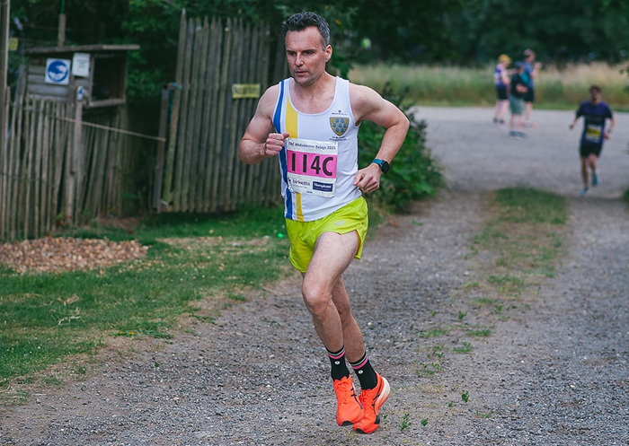
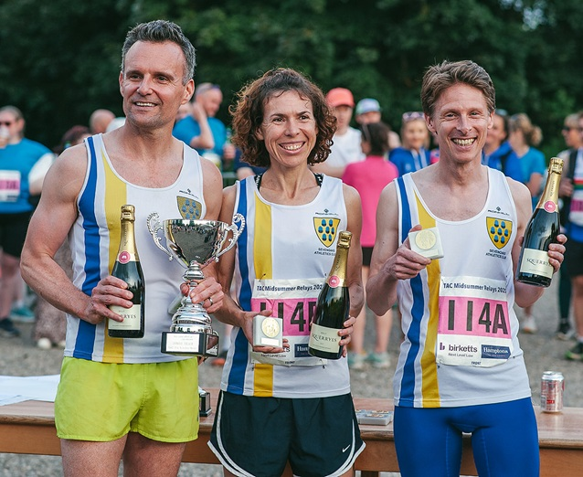
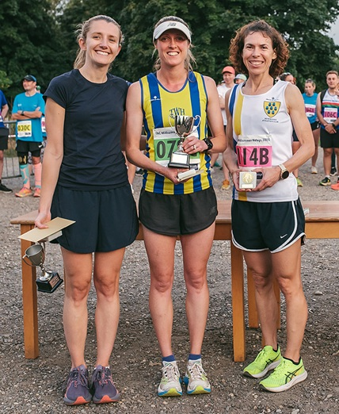
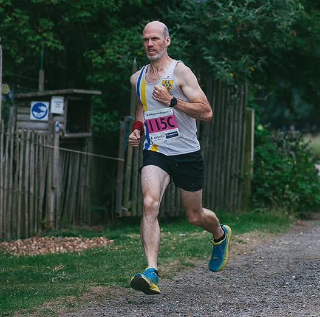
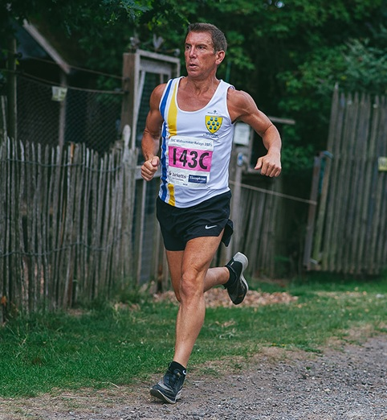

SAC fielded six teams of three runners each at the Tonbridge AC Midsummer Relays at Penshurst Place on the evening of Wednesday 25th June, made up of four mixed and two male teams.
Our fastest three runners on the day, Allan Lee, Jamie Philip and Nicolene Hanekom formed SAC's mixed B team, and they were the sixth team home and the first mixed team. Sevenoaks also fielded the fifth, eighth and sixteenth mixed teams as well as the 21st and 36th men's teams.


All the runners ran a 4k multi-terrain leg, and Nicolene's was the 2nd fastest women's leg of the day - after she was fastest last year.



The full results are here. Thanks to Charlotte Knee photography for the pictures of which there are more here. More information on the TAC website here.